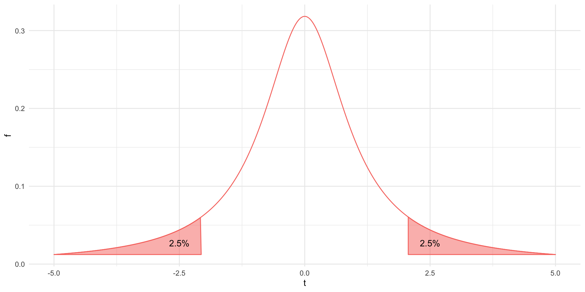
Analysis of Means
Testing Equality of Means
Rodney Dyer, PhD
Testing for Specific Values
In general, many times we are interested in testing to see if some samples have a particular value. Examples may include:
\(H_O: \mu = c\) The mean of the data is equal to a specific value.
\(H_O: \mu_1 = \mu_2\) These two samples have the same mean.
\(H_O: \mu_1 = \mu_2 = \mu_3 ... \mu_k\): The mean of all \(k\) values are all the same.
1-Sample Tests
The 1-sample t.test() defined by the null hypothesis \(H_O: \mu = c\) is where we are testing to see if this sample
\(t =\frac{\bar{x}-\mu}{s_{\bar{x}}}\)
Degrees of Freedom & Rejection Regions
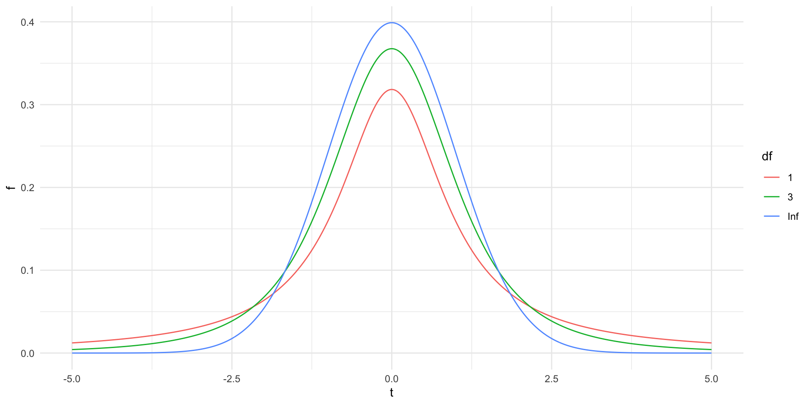
Asymptotic Nature of Samples
As \(df \to \infty\) then \(PDF(t) \to Normal\)
Which is defined (in such elegance) as:
\(P(t|x,v)= \frac{ \Gamma\left( \frac{v+1}{2}\right)}{\sqrt{v\pi}\Gamma\left( \frac{v}{2}\right)} \left( 1 + \frac{x^2}{v}\right)^{-\frac{v+1}{2}}\)
Rejection Regions
Two Tailed Test: \(H_A: \mu \ne c\)
One Tailed Test: \(H_A: \mu \lt c\)
One Tailed Test: \(H_A: \mu \gt c\)
One Sample Test
The Iris Data (Again)
| Species | Sepal Length |
|---|---|
| I. setosa | 5.006 +/- 0.352 |
| I. versicolor | 5.936 +/- 0.516 |
| I. virginica | 6.588 +/- 0.636 |
| Average | 5.843 |

Iris setosa Example
\(H_O: Iris\;setosa\;Sepal\;Length = 5.843\)
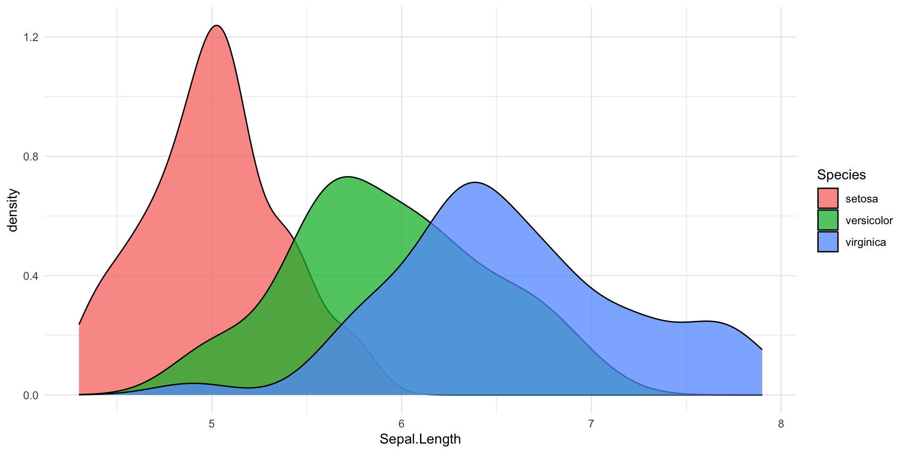
Iris versicolor Example
\(H_O: Iris\;versicolor\;Sepal\;Length = 5.843\)

Iris virginica Example
\(H_O: Iris\;virginica\;Sepal\;Length = 5.843\)

Confidence Intervals.
[1] "statistic" "parameter" "p.value" "conf.int" "estimate"
[6] "null.value" "stderr" "alternative" "method" "data.name" Two-Sample Tests
Evaluating Equality of 2 Means
Null Hypothesis
\(H_O: \mu_{versicolor} = \mu_{virginica}\)
Which is estimated by the statistic.
\(t = \frac{\bar{x}_1 - \bar{x}_2}{s_{\bar{x}_1-\bar{x}_2}}\)
where \(s_{\bar{x}_1-\bar{x}_2}\) is referred to as the pooled variance and is defined as:
\(s_{\bar{x}_1-\bar{x}_2} = \sqrt{ \frac{s_1^2}{N_1}+\frac{s_2^2}{N}}\)
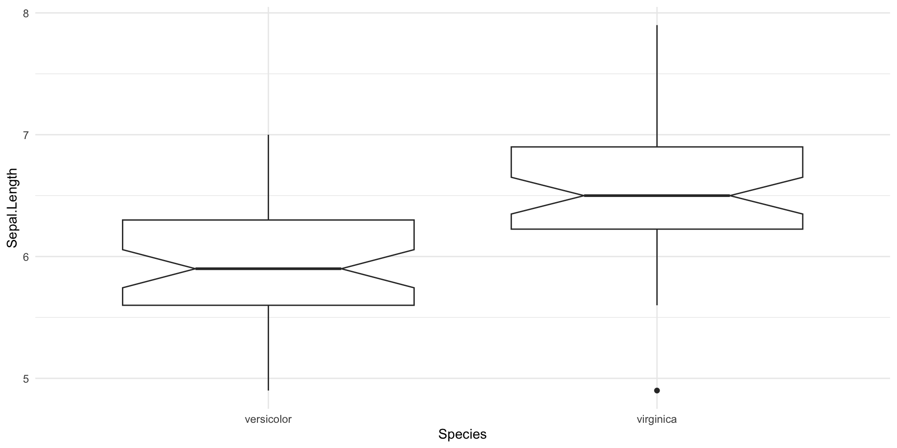
Testing Equality of 2 Means
Welch Two Sample t-test
data: x and y
t = -5.6292, df = 94.025, p-value = 1.866e-07
alternative hypothesis: true difference in means is not equal to 0
95 percent confidence interval:
-0.8819731 -0.4220269
sample estimates:
mean of x mean of y
5.936 6.588 Paired t-tests
If the data are collected in a way that there is supposed to be a connection between the values of x and y (e.g., looking at fluctuating asymeetry in wing shape in individual birds where left wing = right wing), you could instead treat the two data as:
\(H_O: \mu_{x} - \mu_{y} = 0.0\)
and can be evaluated as:
These data are not paired so I will not provide an example. The key here is that the data must come from a biologically and/or ecologically relevant pairing.
Equality of Many Means
Errors Around \(H_O: Not\;Pregnant\)
Non-rejection of a false null hypothesis:
false negative
Errors Around \(H_O: Not\;Pregnant\)
Rejecting of a true null hypothesis:
false positive
Multiple Testing Problem
The rejection region as \(\alpha\) is defined as the fraction of the underlying distribution that we will consider as rare enough to reject \(H_O\).
The probability of rejecting \(H_O\) incorrectly is \(\alpha\) and the probability of not rejecting \(H_O\) incorrectly is \(1-\alpha\).
Multiple Testing Problem
What is the probability of getting at least one false positive result if we test all three pairs of individual mean values in the Iris data set?
\(P(false\;positive) = 1 - P(no\;significant\;results)\)
for each trial. So, if we are to do 3 tests, this is equal to
\(1 - (1-0.05)^3 \approx 0.1426\)
Multiple Testing Problem
If we test all three pairs of tests for the Iris data, what mean that we are expecting,
even if there are absolutely no differences between species,
we expect to reject the \(H_O\) at least 14% of the time!
Change either \(\alpha\) (known as a Bonferroni Correction) or adjust the Model itself (preferred).
A Linear Model Approach
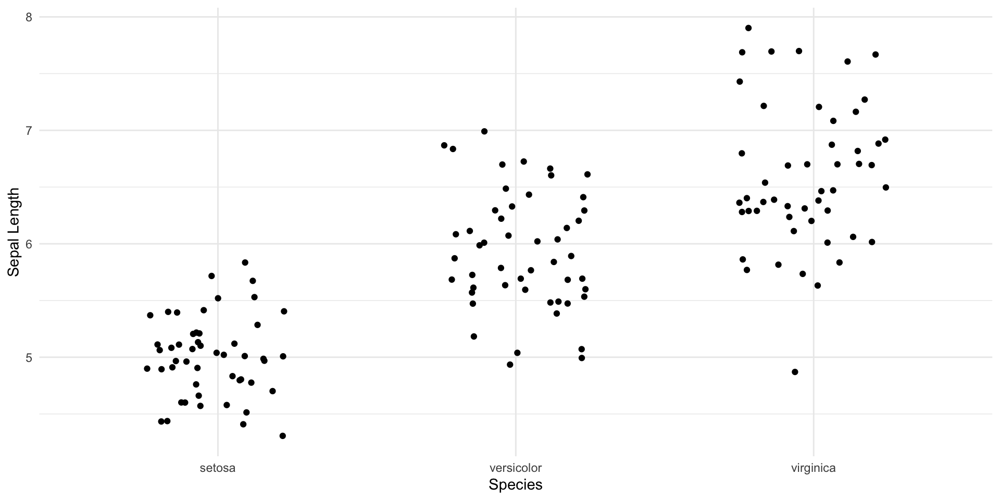
\(y_{ij} = \mu + \tau_i + \epsilon_j\)
A Linear Model Approach
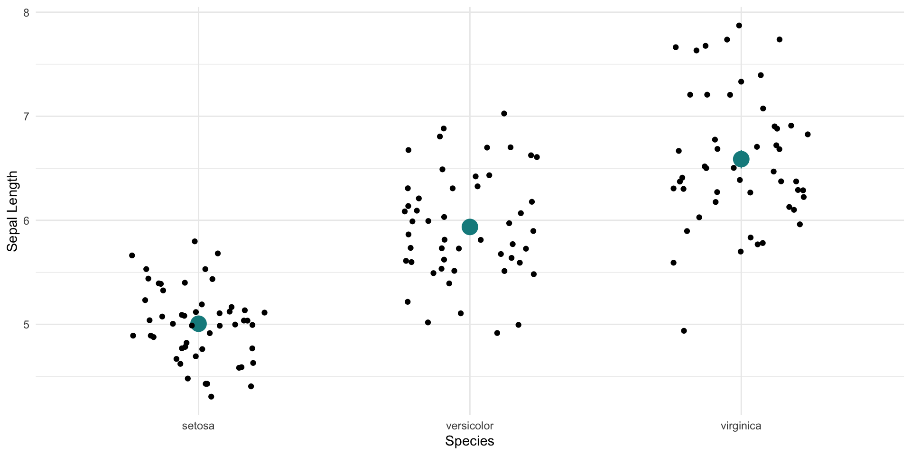
\(y_{ij} = \mu + \tau_i + \epsilon_j\)
A Linear Model Approach
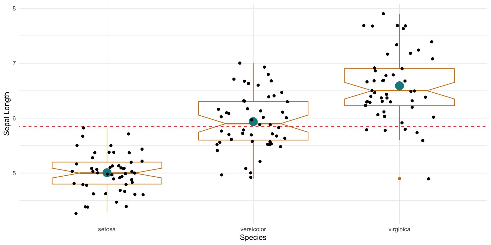
\(y_{ij} = \mu + \tau_i + \epsilon_j\)
A Linear Model Approach
\(y_{ij} = \mu + \tau_i + \epsilon_j\)
where:
- \(\mu\) is the overall mean of all the data.
- \(\tau_i\) is the deviation of the \(i^{th}\) treatment level from the overall mean.
- \(\epsilon_j\) is the deviation of the observation from the treatment mean.
The Null Hypothesis \(H_O: \tau_i = 0\)
Decomposing the Variance
The Analysis of Variance Table for Testing the Null Hypothesis \(H_O: \tau_i = 0\).
| Source | df | SS | MS |
|---|---|---|---|
| Among | \(K-1\) | \(\sum_{i=1}^K N_i \left( \bar{x}_i - \bar{x} \right)^2\) | \(\frac{SS_A}{K-1}\) |
| Within | \(N-K\) | \(\sum_{i=1}^Kn_i\left( \sum_{j=1}^{N_i}(x_{ij}-\bar{x}_i)^2 \right)\) | \(\frac{SS_W}{N-K}\) |
| Total | \(N-1\) | \(\sum_{i=1}^K \sum_{j=1}^{N_i} (x_{ij} - \bar{x})^2\) |
The Test Statistic
Which is evaluated by the statistic:
\(F = \frac{MS_A}{MS_W}\)
defined by the most excellent \(F\) distribution. \(f(x | df_A, df_W) = \frac{\sqrt{\frac{(df_Ax)^{df_A}df_W^{df_W}}{(df_Ax + df_W)^{df_W+df_A}}}}{x\mathbf{B}\left( \frac{df_A}{2}, \frac{df_W}{2} \right)}\)
Analysis of Variance (aov)
In R we use the aov() function.
Analysis of Variance Table
The variance decomposition for this model, just like for regression models, can be displayed using the anova() summary function.
Post-Hoc Testing
Why Post-Hoc?
Potential Outcomes where \(H_O\) is rejected:
\(\mu_{setosa} \; \ne \mu_{virginica}\)
\(\mu_{setosa} \; \ne \mu_{versicolor}\)
\(\mu_{virginica} \; \ne \mu_{versicolor}\)
\(\mu_{setosa} \; \ne \; \mu_{virginica} \; \ne \mu_{versicolor}\)
By rejecting \(H_O\), we do not know which of the previous statements caused the Among-Treatment Sums of Squares to be large enough to push the estimate of \(F\) into the rejection region of the distribution.
The Tukey Test
This test examines all pairs of means and determines if their confidence intervals overlap or not.
Tukey multiple comparisons of means
95% family-wise confidence level
Fit: aov(formula = Sepal.Length ~ Species, data = iris)
$Species
diff lwr upr p adj
versicolor-setosa 0.930 0.6862273 1.1737727 0
virginica-setosa 1.582 1.3382273 1.8257727 0
virginica-versicolor 0.652 0.4082273 0.8957727 0The Tukey Test
The difference is:
\(q = \frac{\bar{y}_{max} - \bar{y}_{min}}{\sigma \sqrt{2/N}}\)
and the confidence intervals are based upon Student-ized confidence ranges.
Visualizing the Tukey
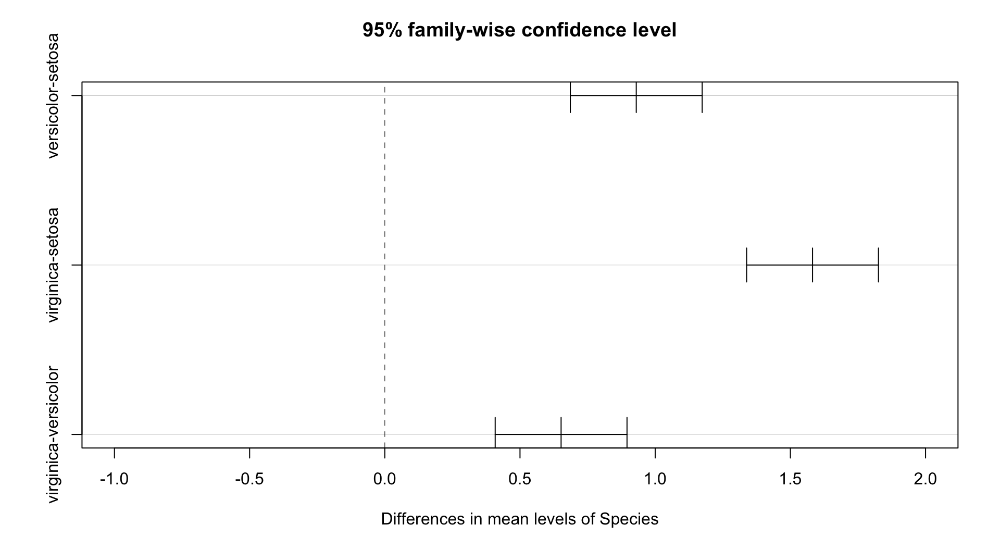
Two-Factor Models
Analysis with 2 Predictors.
There are times when we have more than on treatment category for a response. For example, a growth experiment may have a treatment that is high light and low light as well as one that has fewer than normal, normal, and more than normal nutrients. These are called 2-factor Analysis of Variance.
- Each factor can be considered independently.
- The interaction between factors can be exmained as well.
Specifying A Two Factor Model
Here i’m going to use a new data set because there is only one categorical variable in the iris data used above. Here is the old Motor Trend Cars dataset
mpg cyl disp hp
Min. :10.40 Min. :4.000 Min. : 71.1 Min. : 52.0
1st Qu.:15.43 1st Qu.:4.000 1st Qu.:120.8 1st Qu.: 96.5
Median :19.20 Median :6.000 Median :196.3 Median :123.0
Mean :20.09 Mean :6.188 Mean :230.7 Mean :146.7
3rd Qu.:22.80 3rd Qu.:8.000 3rd Qu.:326.0 3rd Qu.:180.0
Max. :33.90 Max. :8.000 Max. :472.0 Max. :335.0
drat wt qsec vs
Min. :2.760 Min. :1.513 Min. :14.50 Min. :0.0000
1st Qu.:3.080 1st Qu.:2.581 1st Qu.:16.89 1st Qu.:0.0000
Median :3.695 Median :3.325 Median :17.71 Median :0.0000
Mean :3.597 Mean :3.217 Mean :17.85 Mean :0.4375
3rd Qu.:3.920 3rd Qu.:3.610 3rd Qu.:18.90 3rd Qu.:1.0000
Max. :4.930 Max. :5.424 Max. :22.90 Max. :1.0000
am gear carb
Min. :0.0000 Min. :3.000 Min. :1.000
1st Qu.:0.0000 1st Qu.:3.000 1st Qu.:2.000
Median :0.0000 Median :4.000 Median :2.000
Mean :0.4062 Mean :3.688 Mean :2.812
3rd Qu.:1.0000 3rd Qu.:4.000 3rd Qu.:4.000
Max. :1.0000 Max. :5.000 Max. :8.000 Quarter Mile Speed ~ Engine Type & Transmission
Time Engine Transmission
Min. :14.50 Straight:14 Automatic:19
1st Qu.:16.89 V-Shaped:18 Manual :13
Median :17.71
Mean :17.85
3rd Qu.:18.90
Max. :22.90 One Factor Analyses: Engine
One Factor Analyses: Transmission
Interaction Terms
This notation inserts both terms independently and their interaction into the model.
Analysis of Variance Table
Response: Time
Df Sum Sq Mean Sq F value Pr(>F)
Engine 1 54.872 54.872 49.1643 1.261e-07 ***
Transmission 1 12.853 12.853 11.5162 0.002077 **
Engine:Transmission 1 0.012 0.012 0.0104 0.919668
Residuals 28 31.251 1.116
---
Signif. codes: 0 '***' 0.001 '**' 0.01 '*' 0.05 '.' 0.1 ' ' 1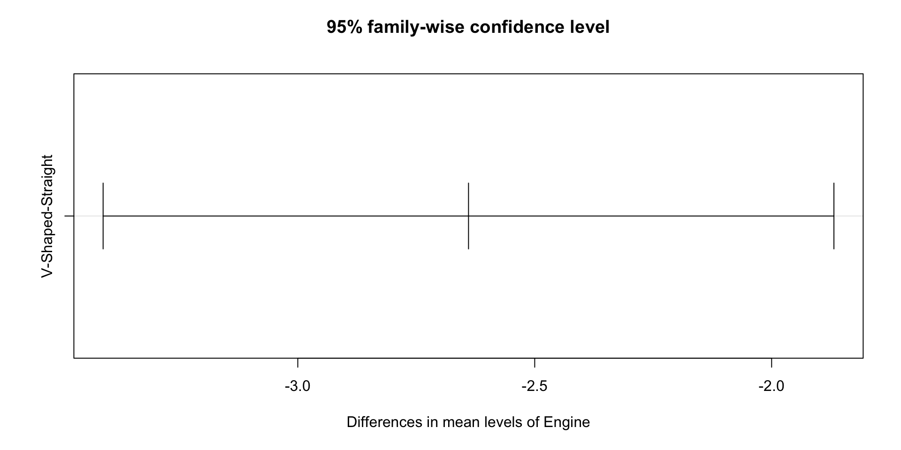
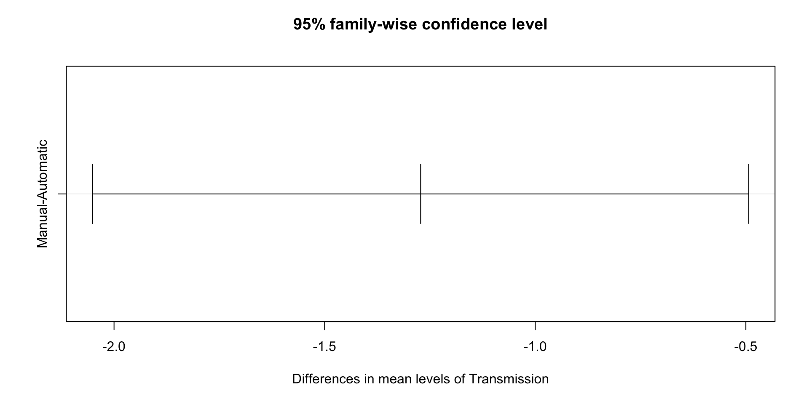
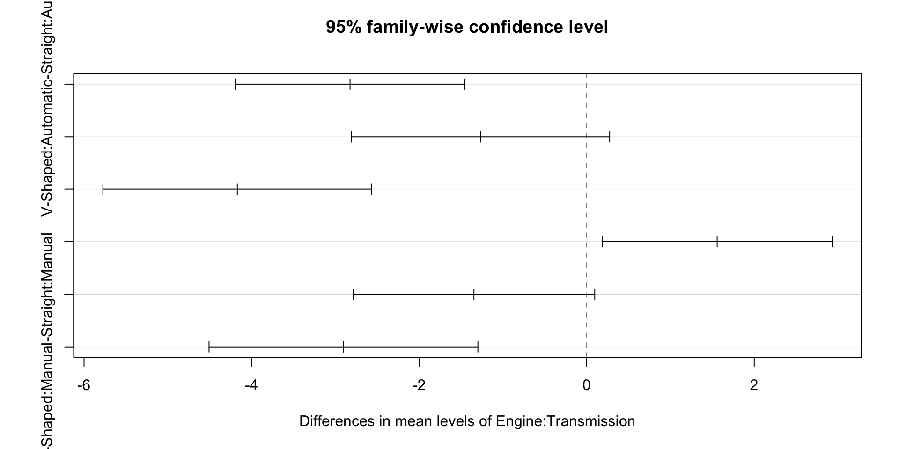